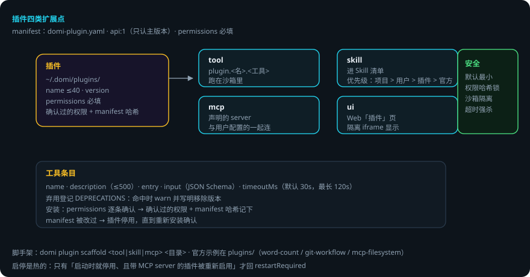
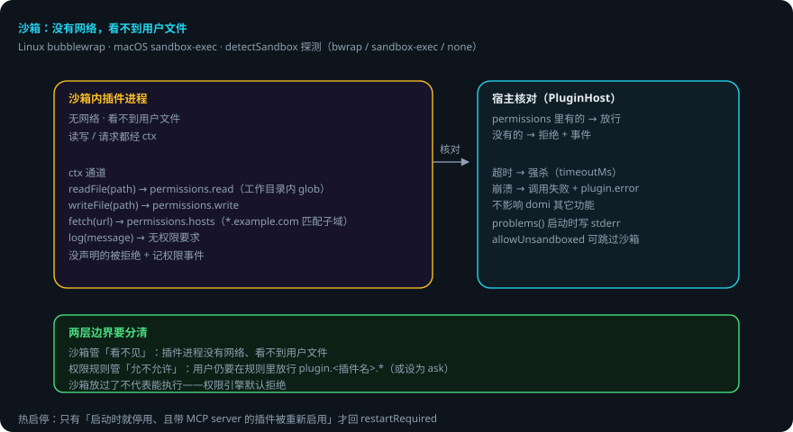

插件运行时
本页回答四个问题：插件能扩展什么？manifest 怎么保证安全？沙箱管什么、权限规则管什么？出错了会怎样？
packages/plugin—— 插件宿主。写插件的教程在插件开发；本页讲宿主机制。 贯穿例子：给登录接口加限流——你装了一个 git-workflow 插件，domi 用它提交代码。
先说结论
- 插件有四类扩展点：tool / skill / mcp / ui。
- 插件工具注册为
plugin.<插件名>.<工具名>，跑在沙箱里。 - permissions 必填；安装时逐条确认，确认过的权限连同 manifest 哈希记下——之后 manifest 被改过，插件就停用，直到重新安装确认。
- 沙箱：带代码的工具没有网络、看不到任何用户文件。读写文件、发请求都经
ctx，宿主按声明的权限核对。 - 沙箱管的是「看不见」，权限规则管的是「允不允许」——两个独立机制。
- 工具超时被强杀；崩溃不影响 domi，只让这次调用失败并留一条
plugin.error。
用到的词
| 词 | 意思 |
|---|---|
| 扩展点 | 插件能贡献的东西：工具 / 技能 / MCP server / UI 面板。 |
| manifest | domi-plugin.yaml，插件的声明文件。 |
| 沙箱 | 限制进程能力的系统机制（bwrap / sandbox-exec）。 |
| ctx | 宿主给插件的受限通道（读 / 写 / 请求 / 日志）。 |
| 热启停 | 插件启用 / 停用即时生效，不用重启 daemon。 |
1. 四类扩展点

| 扩展点 | 宿主怎么用 |
|---|---|
| tool | 注册为 plugin.<插件名>.<工具名>，跑在沙箱里 |
| skill | 进 Skill 清单（同名优先级：项目 > 用户 > 插件 > 官方） |
| mcp | 声明的 server 与用户自己配的一起连 |
| ui | Web「插件」页隔离 iframe 里显示 |
2. manifest 与安装
domi-plugin.yaml（api: 1，PLUGIN_API_VERSION，只认主版本）。字段：
name：小写字母数字与-，最长 40。version/description。permissions（必填）：插件要什么权限，逐条列给用户确认。contributes：tools / skills / mcp / ui。
工具条目：name / description（≤500）/ entry / input（JSON Schema）/ timeoutMs（默认 30 秒，最长 120 秒）。弃用登记：DEPRECATIONS（命中时 warn 并写明移除版本）。
安装（install.ts）：domi 把 permissions 逐条列给用户确认；确认过的权限连同 manifest 的哈希一起记下来。之后 manifest 被改过，插件就停用，直到重新安装确认。
脚手架：domi plugin scaffold <tool|skill|mcp> <目录>。
3. 沙箱：没有网络，看不到用户文件

带代码的工具跑在系统级沙箱里（Linux：bubblewrap；macOS：sandbox-exec）。读写文件、发请求都经 ctx，宿主按插件声明的权限核对：
| ctx 能力 | 权限来源 |
|---|---|
cwd / readFile(path) |
permissions.read（相对工作目录的 glob，宿主代读） |
writeFile(path, content) |
permissions.write |
fetch(url, ...) |
permissions.hosts（*.example.com 匹配子域） |
log(message) |
无 |
没声明的被拒绝并记一条权限事件。allowUnsandboxed 配置可跳过沙箱（detectSandbox 探测：bwrap / sandbox-exec / none）。工具超时被强杀；崩溃不影响 domi，只让这次调用失败并留一条 plugin.error。
两层边界要分清：
- 沙箱管「看不见」：插件进程没有网络、看不到用户文件。
- 权限规则管「允不允许」：用户仍然要在权限规则里放行
plugin.<插件名>.*（或设为 ask）。
4. 宿主接线
host.ts：PluginHost——加载~/.domi/plugins下的插件，提供tools(cwd)（含沙箱包装）、mcpServers()、disabledServers()、problems()（加载问题，daemon 启动时逐条写 stderr）、UI 面板数据（plugin.uiRPC）。inprocess.ts：无沙箱路径的进程内执行。- 启停是热的：只有「启动时就停用、且带 MCP server 的插件被重新启用」才回
restartRequired。
5. 出错了怎么办：git-workflow 插件调用失败
- 工具超时（默认 30 秒）。强杀；这次调用失败，留
plugin.error。domi 其它功能不受影响。 - 权限没声明（插件想读
/etc/passwd）。ctx 拒绝并记权限事件。模型看到拒绝，改路径。 - manifest 被改过。插件停用，直到重新安装确认。daemon 启动时把加载问题逐条写 stderr（
problems()）。 - 插件崩溃。不影响 domi；这次调用失败，留
plugin.error。 - 权限规则没放行。沙箱放过了，但
plugin.git-workflow.*无规则 → 权限引擎默认拒绝。
一张表看全部情况
| 情况 | domi 做什么 | 你要做什么 |
|---|---|---|
| 工具超时 | 强杀，留 plugin.error | 调 timeoutMs 或换实现 |
| 越权访问 | ctx 拒绝，记权限事件 | 补 permissions 声明 |
| manifest 被改 | 停用，直到重新安装 | 重新安装确认 |
| 插件崩溃 | 调用失败，不影响 domi | 看 plugin.error 排查 |
| 权限规则没放行 | 默认拒绝 | 放行 plugin.<插件名>.* |
6. 可靠性靠什么
- 默认最小权限：permissions 必填、逐条确认、哈希锁死。
- 沙箱物理隔离：没有网络、看不到文件——越权连「看见」都做不到。
- ctx 是唯一通道：读写请求都经宿主核对，不留直通路径。
- 故障隔离：超时强杀、崩溃不影响 domi。
- 热启停：启停即时生效，不用重启。
已知限制
- 沙箱依赖系统能力（bwrap / sandbox-exec）；探测不到时只能选
allowUnsandboxed或不用该插件。 - manifest 哈希校验是整文件级的：改一个字段就要求重新确认。
- ui 面板是隔离 iframe：能力有限，适合展示不适合复杂交互。
- 只有「启动时就停用、且带 MCP server」的插件重启用才要求重启。
代码在哪里
| 主题 | 位置 |
|---|---|
| 插件宿主 / 加载 / problems | packages/plugin/src/host.ts |
| 沙箱包装 | packages/plugin/src/sandbox.ts |
| 进程内执行（无沙箱） | packages/plugin/src/inprocess.ts |
| manifest 校验 | packages/plugin/src/manifest.ts |
| 安装与哈希 | packages/plugin/src/install.ts |
| 脚手架 | packages/plugin/src/scaffold.ts |
测试：packages/plugin/test/（manifest 校验、权限核对、沙箱包装、哈希失效停用）。